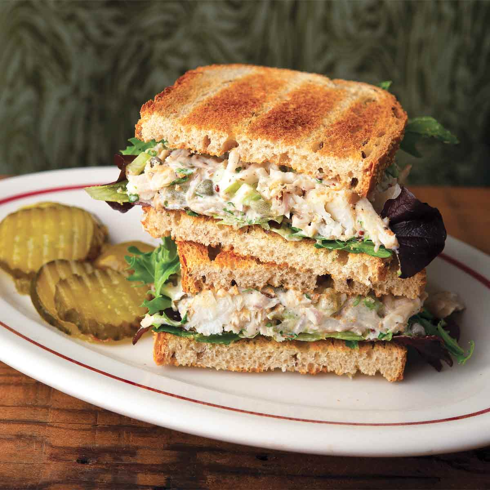

Receptai
Turimų receptų kiekis: 3
Makaronai su pomidorų padažu
20 min • Porcijos: 2

Ingredientai
- 200g makaronų
- 1–2 stiklinės pomidorų padažo
- 2 skiltelės česnako
- 1 arbatinis šaukštelis alyvuogių aliejaus
- Druska ir pipirai pagal skonį
Žingsniai
- Išvirti makaronus sūdytame vandenyje.
- Keptuvėje įkaitink alyvuogių aliejų ir smulkiai supjaustytą česnaką.
- Pridėk pomidorų padažo į keptuvę ir troškink padažą keletą minučių.
- Sumaišyk makaronus su padažu
- Pagardink druska ir pipirais pagal skonį, ir patiek. Skanaus!
Jogurtas su vaisiais
5 min • Porcijos: 1

Ingredientai
- 1 cup jogurto
- Vaisių
- Granola
- Medus (nebūtina)
Žingsniai
- Pridėk jogurto į dubenį
- Užberkite vaisių ir granolos.
- Užpilkite medumi ir mėgaukitės. Skanaus!
Tunos sumuštinis
10 min • Porcijos: 1

Ingredientai
- 1 skardinė tuno
- Majonezas arba jogurtas
- Duona
- Salotos lapai
Žingsniai
- Sumaišykite tuną su majonezu arba jogurtu.
- Paskrudinkite duoną.
- Pridėk salotos lapus ir sumaišykite. Skanaus!